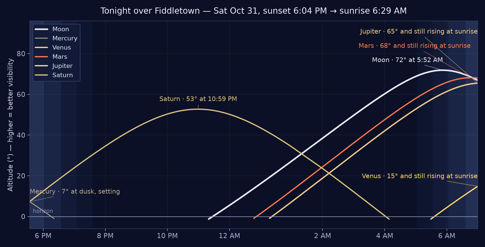

10:00 AM
FPPOA Board Meeting
Fiddletown Park Property Owners Association board meeting — open session, members welcome. Agenda and details in Around Town, below.
Saturday, October 31, 2026 · Morning Edition — published 7:03 AM PT
Halloween lands on a rainy Saturday. The National Weather Service calls for rain this morning, then showers and thunderstorms between 2 and 5 PM — a quarter to half an inch of new rain today — with rain likely again tonight (low 43°) — trick-or-treaters and porch parties should plan for wet roads and bring the costumes that can take a little weather. The good news for the foothills: no active weather alerts, no fire weather concerns today, and tonight still offers a full Halloween slate, from the FPPOA board meeting at the schoolhouse this morning to live music in Drytown tonight. This is the Gazette’s first edition — the safety news neighbors need, leading every page, and the foothills’ public events listed as completely as we can verify them.
Weather alerts — none active. No National Weather Service alerts in effect for the Fiddletown area at press time.
Roads — no incidents in the Fiddletown–Plymouth–Jackson area. The CHP feed shows no incidents on SR-49, SR-88 or SR-124 around the foothills towns at press time. Heading uphill, chain control (R2) is in effect on SR-88 from Silver Lake to Red Lake Creek, and on SR-4 from Tamarack to Mt. Reba — carry chains if you are headed over the passes.
Fire weather — no concerns today. Rain and light winds; no Red Flag Warnings. Burn-day status: check with CAL FIRE’s Amador-El Dorado Unit before any burn — the Gazette prints burn status only when it can verify it.
12 public events across the foothills today — a full Halloween Saturday.
Fiddletown Park Property Owners Association board meeting — open session, members welcome. Agenda and details in Around Town, below.
📍 Jackson — starts and finishes at the historic Jackson Catholic Cemetery (Cemetery Ln)
The 2nd annual Halloween-morning 5K for runners and walkers of all abilities. Costumes encouraged, with prizes for top finishers and age groups.
📍 Chew Kee Store, Main Street, Fiddletown
One of California's most authentic Gold Rush-era Chinese heritage sites — an 1850s rammed-earth herb shop preserving original artifacts. Today is the last day of its April–October season.
📍 Scott Harvey Wines, 10851 Shenandoah Rd, Plymouth
A hands-on blending session at the Shenandoah tasting room where you become the winemaker.
📍 Golden Leaves Vineyard & Winery, 3625 Omo Ranch Rd, Somerset
Visit all four wineries on Omo Ranch Rd (Fair Play): costumes encouraged, live music, Halloween treats, and pick grapes to taste and take home. Free tickets via Golden Leaves.
📍 Dobra Zemlja Winery, 12505 Steiner Rd, Plymouth
Grab your favorite tutu and a fake (or real) mustache and celebrate Halloween in Dobra Zemlja's spooky wine cave, with their famous spiced wine.
📍 Fraser Family Vineyards, 11210 Bell Rd, Plymouth
A festive weekend of wine tasting and wood-fired pizza, today and tomorrow. Come in costume and receive a prize; pizza is complimentary for wine club members.
📍 Amador Ridge Shopping Center, Jackson
Children can trick-or-treat at participating businesses throughout the center, with games, prizes, and a raffle in the food court. Costumes encouraged. Free.
The Lions' Halloween parade down Main Street. Free.
📍 Plymouth Hotel Kitchen & Bar, 9356 Main St, Plymouth
DJ Bryan spins disco from 6:30 and takes requests, plus a costume contest with a $100 prize — $50 cash and a $50 hotel gift card.
📍 Feist Wines @ The Drytown Social Club, 15950 Highway 49, Drytown
Americana and honky-tonk on the porch; costumes welcome, boots recommended. $15.
📍 Amador County Courthouse, 108 Court Street, Jackson
A guided after-dark paranormal investigation of the 1863 courthouse and its Gold Rush-era jail cells. Ages 14+. $49.87.
Sun Nov 1 — Daylight Saving Time ends. Clocks go back one hour at 2:00 AM. Sunrise comes earlier; evenings get dark sooner.
Sun Nov 1, 9:00 AM — Volcano Farmers Market, Main Street, Volcano.
Sun Nov 1, 11:00 AM — Paris Crepes at the Cave, Bella Grace Vineyards, Plymouth.
Tue Nov 3 — Election Day. Polls close 8:00 PM. Return your ballot by mail, drop box, or in person — a ballot returned anywhere in California is forwarded to its home county.
Wed Nov 4, 5:00–8:00 PM — Amador All Stars, Feist Wines @ The Drytown Social Club, Drytown. Weekly local-music showcase; free.
Sat Nov 7, 11:00 AM — Fair Play Harvest Festival, Golden Leaves Vineyard & Winery, Somerset.
Sat Nov 7, 5:15 PM — Peace Officer & Citizen of the Year Awards Banquet, American Legion Hall, Sutter Creek. $45; tickets in advance only, none at the door. Correction: an earlier draft of this edition listed this banquet for today — it is Saturday, Nov 7.
⭐ From our own hills — living history, today: the Chew Kee Museum in Fiddletown, an 1850s rammed-earth Chinese herb shop from the town's Gold Rush days, closes its season today — last chance to step inside until spring (12:00–4:00 PM).
1850 — William Daylor dies on this day. Daylor, partner of Jared Sheldon, discovered the Cosumnes River Valley — our river: the canal diverting the Cosumnes, finished in 1853, brought water to Fiddletown's dry diggings and made the town boom.
1849 — the bark Ark sails for the gold fields from Newburyport with 117 passengers; 205 days around Cape Horn later she reaches San Francisco — the kind of voyage that filled the Mother Lode camps, ours included.
1850 — the U.S. Census is taken in Placerville on Oct 31, counting miners and traders in the diggings a day's ride north — the Gold Rush, enumerated.
1864 — Nevada becomes the 36th state. Amador still celebrates Nevada Day: the winery specials across the Shenandoah Valley this weekend are a 160-year-old tradition.
Wider page: 1913 the Lincoln Highway is dedicated · 1926 Harry Houdini dies · 1941 Mount Rushmore is completed.

Tonight's chart (~8 PM, facing south): the Great Square of Pegasus rides high overhead, Cassiopeia climbs in the northeast, the Summer Triangle sinks in the west, and Saturn shines steady in the south in Cetus. Orion rises in the east late in the evening. Early evening is moonless — the Moon doesn't rise until around 11 PM.
🌖 Moon: waning gibbous, about two-thirds lit (65%), five nights past the Hunter's Moon. Last quarter tomorrow, Nov 1 — the same night the clocks go back.
Planets up: Saturn (mag ~0.5) takes the evening — up as darkness falls (~6:00 PM sunset), well placed all evening; its rings are nearly edge-on this season. Jupiter (mag −2.0) and reddish Mars rise late in Leo, lined up with Regulus, brilliant before dawn.
Notable: two meteor showers are active — the Orionids, winding down, and the Taurids, the slow bright “Halloween fireballs” (Southern Taurids peak Nov 4–5).
Viewing note: honestly, tonight's rain and cloud will likely hide most of this — this is what's up there when the clouds part. The clearing, moonless early evenings early in the week are the better bet. Dark-sky country is part of foothill life; this box treats it that way.
Northern Flicker, red-shafted form — a male. Filmed from a Fiddletown deck on Halloween morning, hitching up a trunk in a tree gone full fall red, pines behind. Watch for the field marks: the brown back barred with black, the spotted cream breast, the gray face — and, because he's a he, the red mustache stripe.
The flicker is the West's own: in flight, the underwings and tail flash salmon-red — that's the “red-shafted” part. One of our larger woodpeckers at about 11 inches long with a 17-inch wingspan, and a year-round resident of Amador County's foothill woodland.
He's also the family oddball: flickers spend much of their lives on the ground, hunting ants — they eat more ants than almost any other North American bird. Up a trunk, as here, he braces with that stiff tail and probes the bark. Listen for him before you see him: a loud rolling wick-a-wick-a-wick-a, and a sharp klear!
The foothills are full of neighbors who don't read the paper: deer in the garden, turkeys in the road, the occasional bobcat acting like it pays taxes. This desk will carry their sightings — photos, footage, and field notes, town name only, as always. But a desk needs a name, and the Editor declines to choose alone. Herewith, the ballot — ten candidates. Tap Vote on your favorite (it opens an email, pre-filled; that's the ballot box — the paper collects nothing itself). The count so far runs under the ballot, and the winning name takes the masthead.
🐾 Tracks & Tales
Vote🦌 Deer Neighbors
Vote🌲 The Wild Side
Vote👀 Who Goes There?
Vote🪶 Fur, Feathers & Footprints
Vote📡 The Critter Wire
Vote🐾 Paws for the News
Vote⛰️ Wild in the Foothills
Vote🎪 The Menagerie Minutes
Vote🏔️ Critter Country
Vote📊 The count so far
First sighting, pending: the publisher is digging out footage of a recent visitor to the property — it will open this desk. Meanwhile, sightings are open: send yours through the Suggestion Box below.
The Gazette has a correspondent. Nan Dell'Aquila writes this corner — dispatches, notes, and observations from her side of the foothills — filed by email and printed under her byline, as she sends them. (Her cooking lives in Nan's Recipe Corner, over in the rail; this corner is for everything else.)
Nan's first piece for the paper arrived the way her best things do — no preamble, just the goods: a link to her recipe card for Pecan Pie Brownies. It runs in full in Nan's Recipe Corner, over in the rail. Welcome to the masthead, Nan.
Feedback, comments, corrections, and story tips for this edition — all welcome. Tell us what the paper got right, what it missed, and what it should cover next.